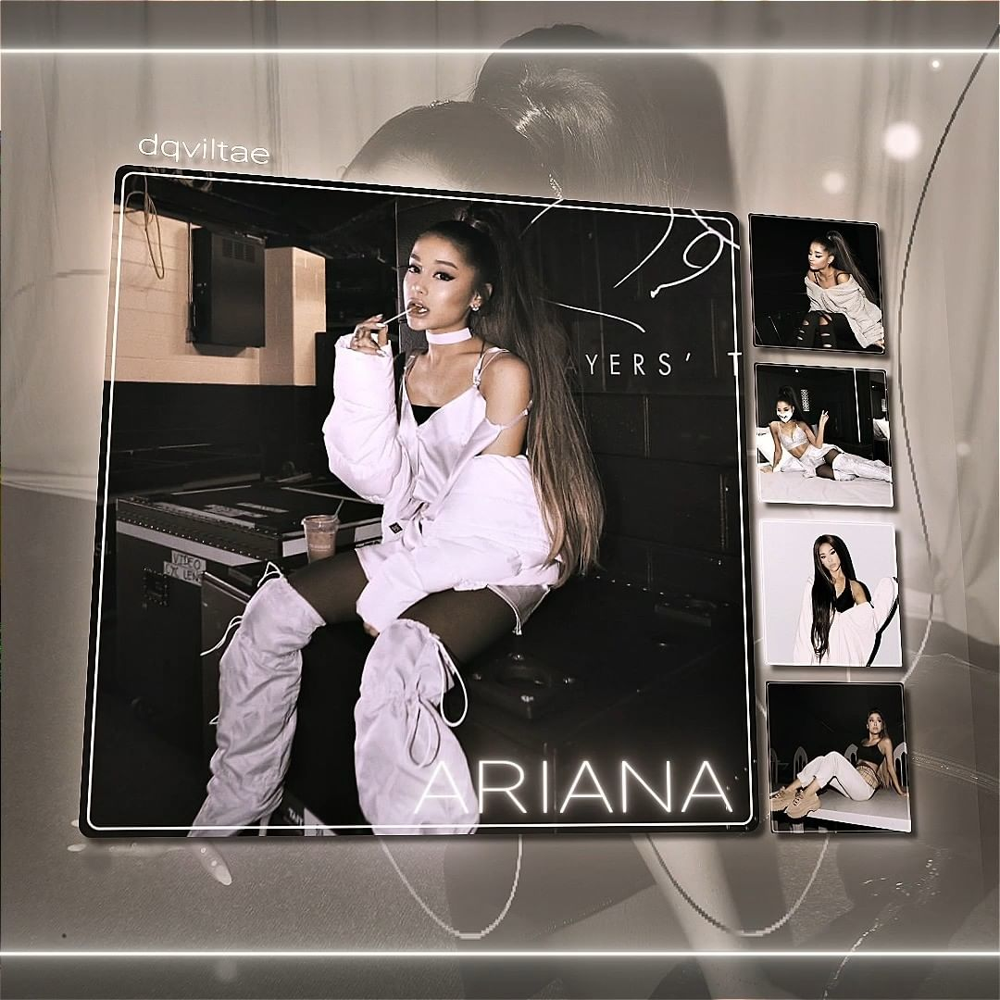
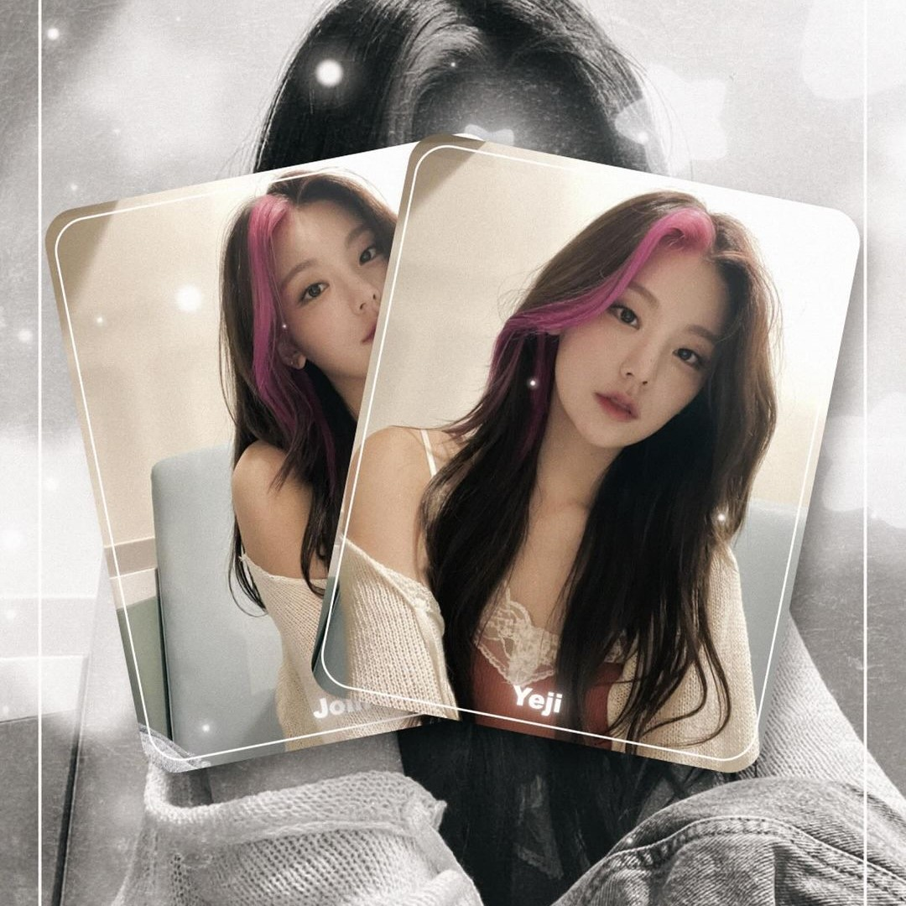
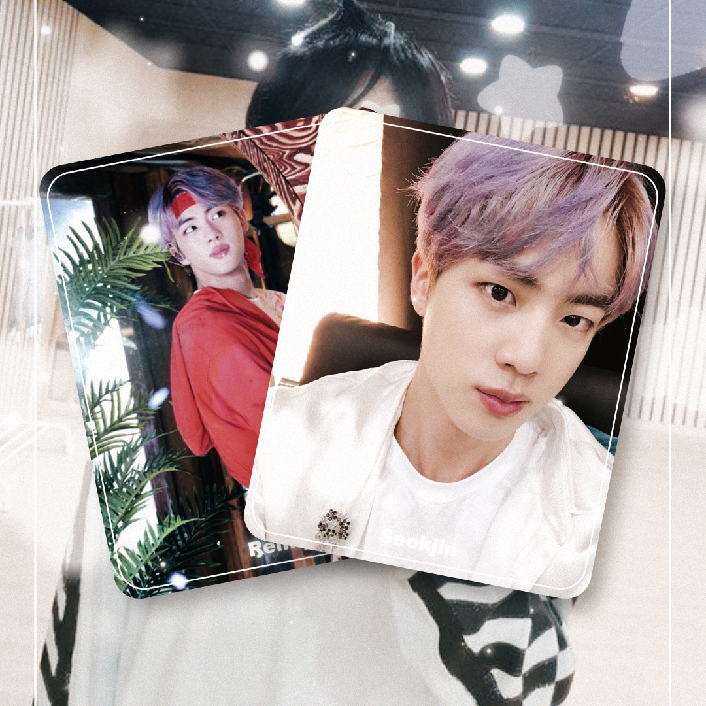

Editing
Like I said above, I started editing in 2019 using Adobe After Effects.
I started making fan edits of Ariana Grande and then started to also edit kpop idols such as blackpink and BTS. And I also edited valkyrae from time to time
Here are some of my edits!
  Coding
I started coding with python/discord.py a few months ago, and I picked it up quite quickly.
I made a discord bot called Hoshi which means star in japanese. The bot was made for fan editors like me since there arent that many or any at all that are made for us. My bot has a levelling system, fun commands and games, and even commands which help people edit! Like a transitions command, or gives them someone to edit or even a color scheme to use!
What i want to do in the futrue
I would like to eventually code websites for people and make a business out of it. This is why i started to take courses and learn html and css.
And hopefully one day i can do just that, if not i'd like to become a proffesional editor and make music videos for celebs or ads for companies or just youtube videos for youtubers and streamers